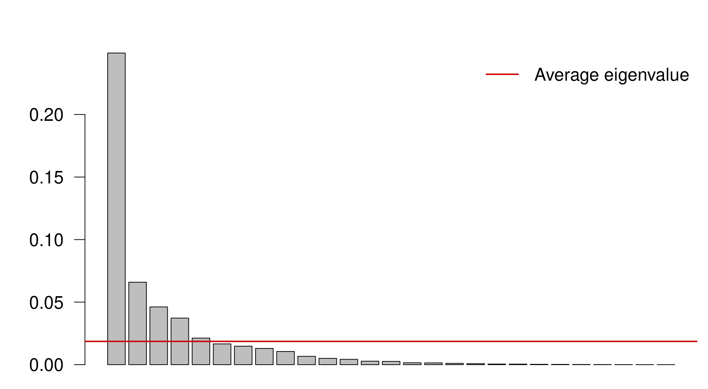
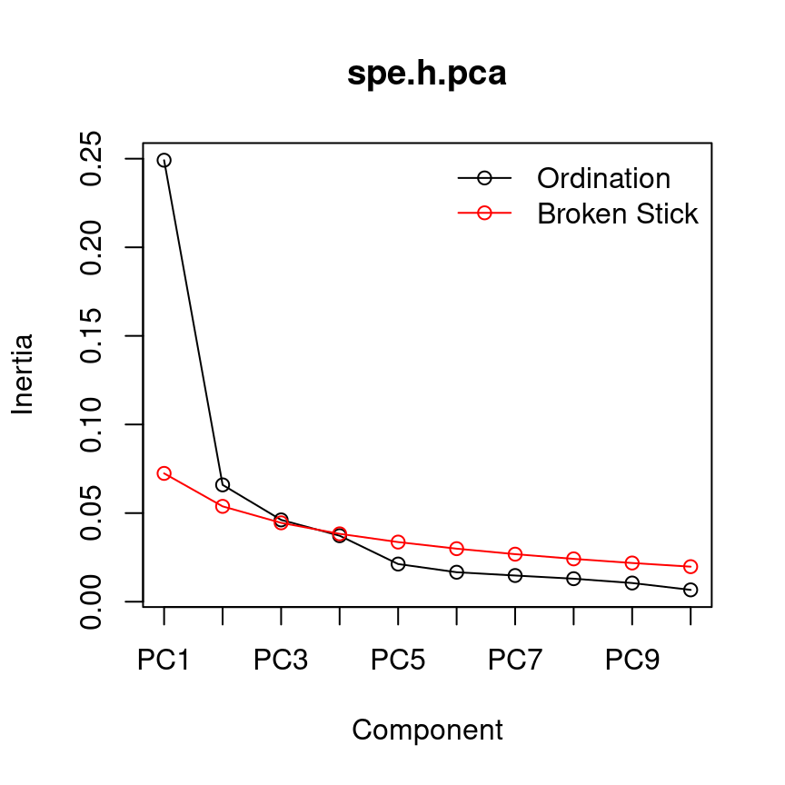
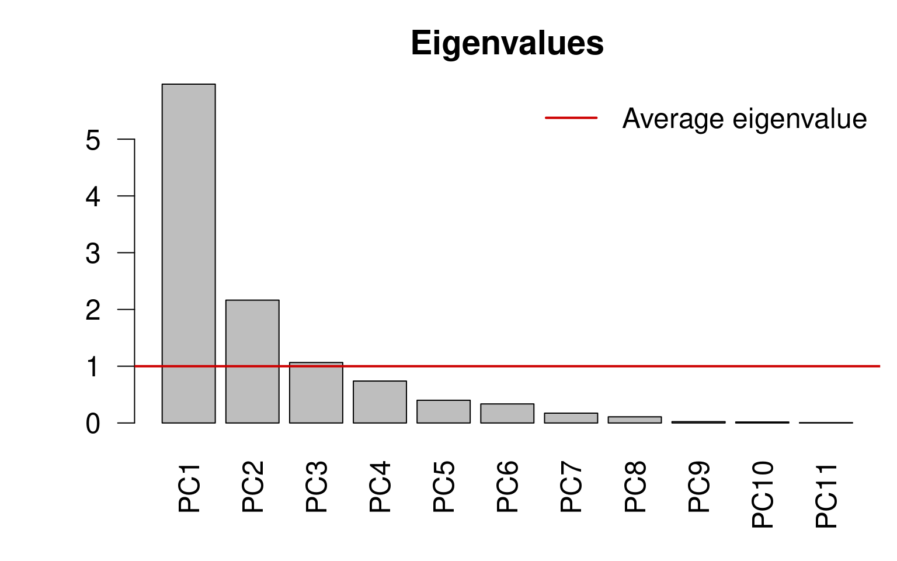
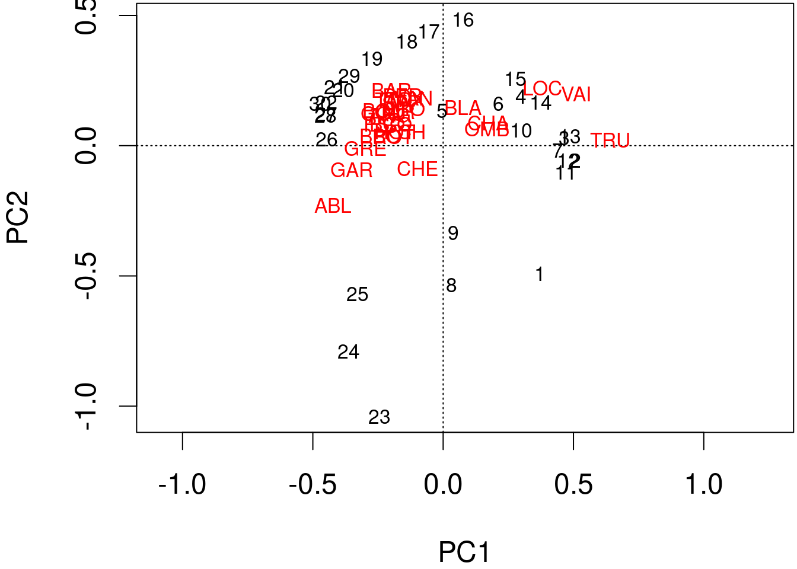
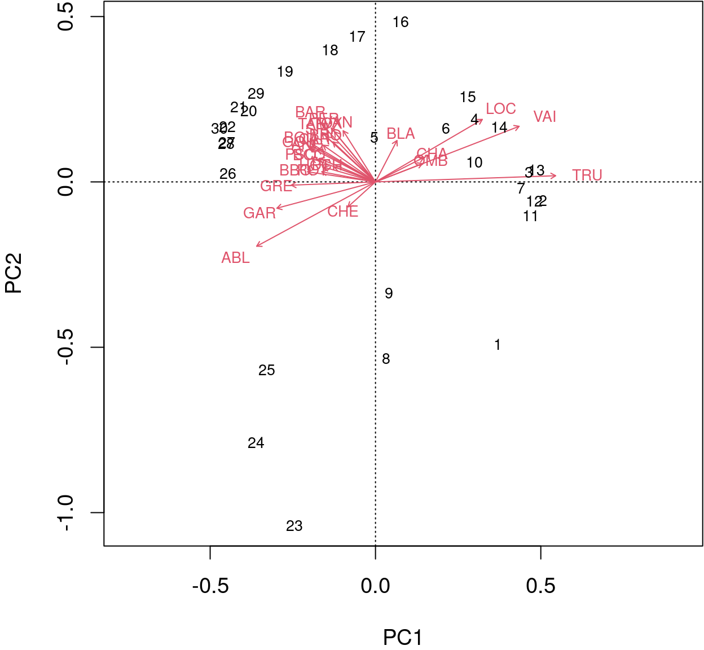
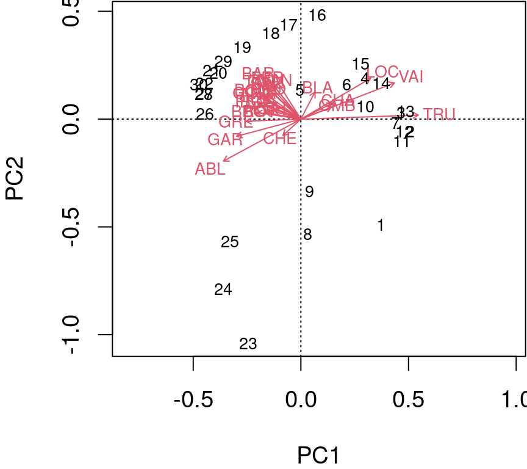
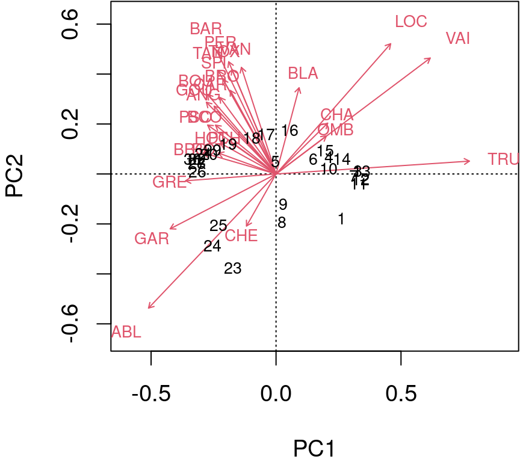
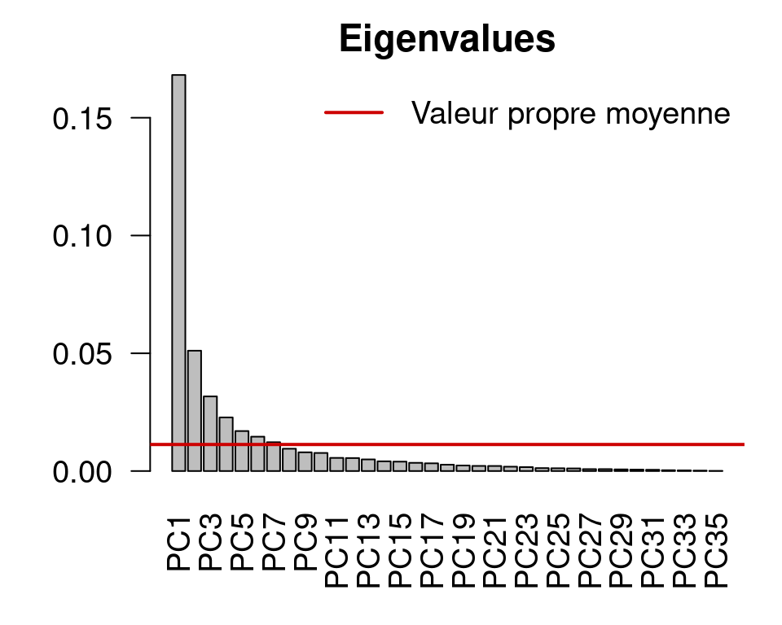
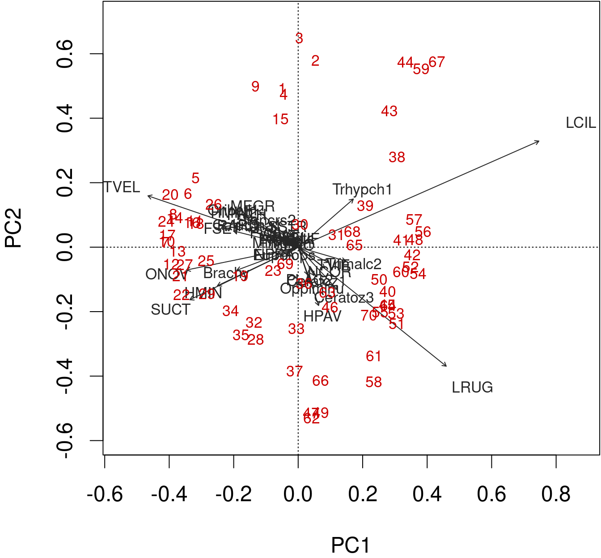

Chapitre 13 Analyse en composantes principales
L’analyse en composantes principales (ACP) est une technique statistique utilisée pour réduire la dimensionnalité d’un ensemble de données tout en conservant la majeure partie de sa variabilité. variabilité. Il s’agit d’une méthode de transformation linéaire qui convertit l’ensemble de variables d’origine en un nouvel ensemble de variables linéairement non corrélées. l’ensemble original de variables en un nouvel ensemble de variables linéairement non corrélées, appelées linéairement non corrélées, appelées composantes principales (CP), qui sont classées par ordre décroissant de variance. par ordre décroissant de variance.
L’ACP a été introduite pour la première fois par Karl Pearson en 1901, qui a développé les fondements mathématiques de la méthode. les fondements mathématiques de la méthode. Plus tard, Harold Hotelling (1933) a fourni une interprétation plus détaillée et plus moderne de la méthode ACP.
L’ACP est devenue l’une des techniques les plus utilisées dans l’analyse des données données en raison de sa capacité à identifier des modèles cachés et à réduire la complexité des données à haute dimension.
En substance, l’ACP vise à trouver les combinaisons linéaires des variables qui représentent la plus grande quantité possible de variation dans l’ensemble l’ensemble des données. Les composantes principales qui en résultent sont orthogonales les unes par rapport aux autres, ce qui signifie qu’elles ne sont pas corrélées entre elles. orthogonales, ce qui signifie qu’elles ne sont pas corrélées. leur importance dans l’explication de la variabilité des données.
Pour vous familiariser avec l’ACP, nous allons suivre des exemples détaillés sur la façon de l’exécuter étape par étape. comment l’effectuer étape par étape, puis nous utiliserons les fonctions des paquets R pour la réaliser.
13.1 L’analyse en composantes principales pas en bref
Supposons que nous ayons un ensemble de données avec \(n\) observations et \(p\) variables représentées par une matrice n x p \(X\). L’objectif de l’ACP est de transformer cet ensemble de en un nouvel ensemble de \(p\) variables non corrélées, appelées composantes principales composantes principales (CP), qui capturent le maximum de variance dans les données originales. données originales.
13.1.0.1 Charger les données
Dans cet atelier, nous utilisons le jeu de données data(varechem), qui contient des des mesures des propriétés chimiques de 18 échantillons de sol provenant d’une d’une expérience sur le terrain. Nous sélectionnerons les deux premières variables :
# Chargement du paquet datasets
library(datasets)
# Charger le jeu de données varechem
data(varechem)
# Sélectionner les données
(data <- varechem[, 1:2])## N P
## 18 19.8 42.1
## 15 13.4 39.1
## 24 20.2 67.7
## 27 20.6 60.8
## 23 23.8 54.5
## 19 22.8 40.9
## 22 26.6 36.7
## 16 24.2 31.0
## 28 29.8 73.5
## 13 28.1 40.5
## 14 21.8 38.1
## 20 26.2 61.9
## 25 22.8 50.6
## 7 30.5 24.6
## 5 33.1 22.7
## 6 19.1 26.4
## 3 31.1 32.3
## 4 18.0 64.9
## 2 22.3 47.4
## 9 15.0 48.4
## 12 16.0 32.7
## 10 14.3 62.8
## 11 16.7 55.8
## 21 21.0 26.513.1.0.2 Normaliser les données
Nous devons d’abord normaliser les données pour qu’elles aient une moyenne nulle et une variance unitaire :
\[ Z_{ij} = \frac{X_{ij} - \bar{X_j}}{s_j} \]
où Z est la matrice standardisée, X est la matrice originale, \(\bar{X_j}\) est la moyenne de la variable j, et \(s_j\) est l’écart-type de la variable j.
data_std <- scale(data)13.1.0.3 Calculer la matrice de covariance
Ensuite, nous calculons la matrice de covariance de \(Z\) :
\[ C = \frac{1}{n-1}ZZ^T \]
où \(C\) est la matrice de covariance et \(T\) représente l’opération de transposition.
La matrice de covariance est une matrice symétrique qui représente les covariances par paire entre les variables. La formule de la covariance entre deux variables \(X\) et \(Y\) est la suivante :
\[\text{Cov}(X,Y) = \frac{1}{n-1}\sum_{i=1}^{n}(X_i - \bar{X})(Y_i - \bar{Y})\]
où \(n\) est la taille de l’échantillon, \(X_i\) et \(Y_i\) sont les valeurs des variables pour l’observation $i$, et \(\bar{X}\) et \(\bar{Y}\) sont les moyennes de l’échantillon des variables.
cov_matrix <- cov(data_std)13.1.0.4 Effectuer la décomposition en valeurs propres de la matrice de covariance
Ensuite, nous calculons les valeurs propres et les vecteurs propres de \(C\) :
\[ Cv = \lambda v \]
où \(C\) est la matrice de covariance, \(v\) est le vecteur propre et \(\lambda\) est la valeur propre correspondante.
eigen_decomp <- eigen(cov_matrix)
Eigenvalues <- eigen_decomp$values
Eigenvectors <- eigen_decomp$vectorsLes vecteurs propres représentent les directions dans l’espace à \(p\) dimensions qui capturent le maximum de variance dans les données, et les valeurs propres indiquent la quantité de variance capturée par chaque vecteur propre.
13.1.0.5 Projeter les données normalisées sur l’espace des valeurs propres
Enfin, nous projetons la matrice de données normalisées \(Z\) sur les nouveaux vecteurs de base pour obtenir les composantes principales. Ici, nous calculons les scores des composantes principales en multipliant les données normalisées par les vecteurs propres de toutes les composantes principales :
\[ Y = ZV \]
où \(Y\) est la matrice des données transformées et \(V\) est la matrice des vecteurs propres.
F_PrComps <- data_std %*% Eigenvectors
head(F_PrComps)## [,1] [,2]
## 18 0.1894957 0.4713816
## 15 0.8662023 1.4319452
## 24 1.3494546 -0.7909067
## 27 0.9718543 -0.5156358
## 23 0.2644868 -0.6269034
## 19 -0.2510109 0.1444178La matrice de score, \(F\), (objet F_PrComps) permet de rotationner le nouvel espace de données, de sorte qu’il soit représenté par rapport aux composantes principales. Par exemple, voir la figure ci-dessous :
![Relation entre N et P à partir de l'ensemble de données `varechem`. Les lignes diagonales violette et orange représentent respectivement la première et la deuxième composante principale. Les lignes violettes indiquent les résidus entre le point de données et la première composante principale, tandis que les lignes orange segmentées indiquent la distance entre les points et la deuxième composante principale. Les flèches indiquent les valeurs propres (direction) de l'analyse en composantes principales effectuée sur ces deux variables.](book-fr_files/figure-html/unnamed-chunk-63-1.png)
Figure 13.1: Relation entre N et P à partir de l’ensemble de données varechem. Les lignes diagonales violette et orange représentent respectivement la première et la deuxième composante principale. Les lignes violettes indiquent les résidus entre le point de données et la première composante principale, tandis que les lignes orange segmentées indiquent la distance entre les points et la deuxième composante principale. Les flèches indiquent les valeurs propres (direction) de l’analyse en composantes principales effectuée sur ces deux variables.
Figure 13.2: Relation entre PC1 et PC2 de l’analyse en composantes principales effectuée sur les variables P et N de l’ensemble de données varechem. Les lignes violettes et orange représentent respectivement la première et la deuxième composante principale. Les lignes violettes indiquent les résidus entre le point de données et la première composante principale, tandis que les lignes orange segmentées indiquent la distance entre les points et la deuxième composante principale.
13.2 Analyse en composantes principales à l’aide des fonctions du paquet
L’ACP peut également être calculée en utilisant les fonctions stats::prcomp(), stats::princomp(), vegan::rda(), et ade4::dudi.pca().
En résumé, voici ce que nous avons fait :
data(varechem)
Y <- varechem[, 1:2]
Y_std <- as.matrix(scale(Y))
Y_R <- cov(Y_std)
Eigenvalues <- eigen(Y_R)$values
Eigenvectors <- eigen(Y_R)$vectors
F_PrComps <- Y_std %*% Eigenvectors
head(F_PrComps)## [,1] [,2]
## 18 0.1894957 0.4713816
## 15 0.8662023 1.4319452
## 24 1.3494546 -0.7909067
## 27 0.9718543 -0.5156358
## 23 0.2644868 -0.6269034
## 19 -0.2510109 0.1444178Comment cela se compare-t-il à stats::prcomp() ?
PCA_prcomp <- prcomp(Y, center = TRUE, scale = TRUE)
# or PCA_prcomp <- prcomp(Y_std)
head(PCA_prcomp$x)## PC1 PC2
## 18 -0.1894957 -0.4713816
## 15 -0.8662023 -1.4319452
## 24 -1.3494546 0.7909067
## 27 -0.9718543 0.5156358
## 23 -0.2644868 0.6269034
## 19 0.2510109 -0.1444178Et quelle est la comparaison avec stats::princomp() ?
PCA_princomp <- princomp(Y_std)
head(PCA_princomp$scores)## Comp.1 Comp.2
## 18 -0.1894957 -0.4713816
## 15 -0.8662023 -1.4319452
## 24 -1.3494546 0.7909067
## 27 -0.9718543 0.5156358
## 23 -0.2644868 0.6269034
## 19 0.2510109 -0.1444178Et avec vegan::rda()?
PCA_vegan_rda <- rda(Y_std)
scores(PCA_vegan_rda, display = "sites", scaling = 1, choices = seq_len(PCA_vegan_rda$CA$rank),
const = sqrt(PCA_vegan_rda$tot.chi * (nrow(PCA_vegan_rda$CA$u) -
1)))[1:5, ]## PC1 PC2
## 18 -0.1894957 -0.4713816
## 15 -0.8662023 -1.4319452
## 24 -1.3494546 0.7909067
## 27 -0.9718543 0.5156358
## 23 -0.2644868 0.6269034vegan::rda() est un peu spéciale. Elle utilise des échelles alternatives. Nous ne les aborderons pas ici, mais vous pouvez étudier la vignette("decision-vegan").
13.3 Analyse en composantes principales sur des données écologiques
Nous avons mis en œuvre l’ACP sur un ensemble de données à deux variables, pour des raisons de simplicité.
Avançons et appliquons-la à notre jeu de données sur les espèces de poissons.
Pour cela, nous allons utiliser la fonction vegan::rda() sur les données de poissons transformées par Hellinger et résumer les résultats :
spe.h.pca <- rda(spe.hel)
# summary(spe.h.pca)Les premières lignes de summary.rda() nous renseignent sur la variance totale et la variance non contrainte de notre modèle.
``{r echo=FALSE} paste(capture.output(summary(spe.h.pca))[5:8])
``{r echo=FALSE}
paste(capture.output(summary(spe.h.pca))[c(12:16, 21:24)])Viennent ensuite les valeurs propres et leur contribution à la variance.
En fait, si nous additionnons toutes nos valeurs propres, nous obtiendrons la quantité de variance non contrainte expliquée par l’analyse !
sum(spe.h.pca$CA$eig)## [1] 0.5023429Les informations suivantes sont liées à l’échelle, aux scores d’espèces et aux scores de sites.
## [1] "Eigenvalue 0.0004263 0.0002812 0.0002188 0.0001382 0.0000876"
## [2] "Proportion Explained 0.0008487 0.0005598 0.0004356 0.0002752 0.0001744"
## [3] "Cumulative Proportion 0.9984010 0.9989608 0.9993965 0.9996717 0.9998460"
## [4] " PC25 PC26 PC27"
## [5] "Proportion Explained 1.062e-04 2.938e-05 1.835e-05"
## [6] "Cumulative Proportion 1.000e+00 1.000e+00 1.000e+00"
## [7] "Scaling 2 for species and site scores"
## [8] "* Species are scaled proportional to eigenvalues"
## [9] "* Sites are unscaled: weighted dispersion equal on all dimensions"
## [10] "* General scaling constant of scores: 1.953663 "
## [11] ""
## [12] ""
## [13] "Species scores"
## [14] "BCO -0.20055 0.08332 -0.074787 -0.0504875 0.073890 0.0249842"
## [15] "PCH -0.14626 0.05268 -0.072012 -0.0432572 0.050318 0.0178776"
## [16] "GAR -0.35085 -0.09353 0.198664 0.0178669 0.023796 -0.0971362"
## [17] "BBO -0.24167 0.03598 -0.079528 -0.0339049 0.096690 0.0620979"
## [18] "ABL -0.42269 -0.22879 0.007158 0.1128353 0.006759 0.1248913"
## [19] "ANG -0.20521 0.11557 -0.072060 -0.0159902 0.072030 -0.0003801"
## [20] ""
## [21] ""
## [22] "Site scores (weighted sums of species scores)"Les espèces font référence à vos descripteurs (c’est-à-dire les colonnes de votre jeu de données), qui sont ici les espèces de poissons.
Les scores font référence à la position de chaque espèce le long des composantes principales.
## [1] "Cumulative Proportion 1.000e+00 1.000e+00 1.000e+00"
## [2] "Scaling 2 for species and site scores"
## [3] "* Species are scaled proportional to eigenvalues"
## [4] "* Sites are unscaled: weighted dispersion equal on all dimensions"
## [5] "* General scaling constant of scores: 1.953663 "
## [6] ""
## [7] ""
## [8] "Species scores"## [1] "PCH -0.14626 0.05268 -0.072012 -0.0432572 0.050318 0.0178776"
## [2] "GAR -0.35085 -0.09353 0.198664 0.0178669 0.023796 -0.0971362"
## [3] "BBO -0.24167 0.03598 -0.079528 -0.0339049 0.096690 0.0620979"
## [4] "ABL -0.42269 -0.22879 0.007158 0.1128353 0.006759 0.1248913"
## [5] "ANG -0.20521 0.11557 -0.072060 -0.0159902 0.072030 -0.0003801"
## [6] ""
## [7] ""
## [8] "Site scores (weighted sums of species scores)"Sites représente les lignes de votre jeu de données, qui sont ici les différents sites le long de la rivière Doubs.
Cette information peut être obtenue avec la fonction score() que nous avons utilisée précédemment :
scores(spe.h.pca,
display = "species" or "sites")13.4 Condenser les données avec l’analyse en composantes principales
Ici, nous avons 27 composantes principales. Cependant, nous pouvons appliquer des algorithmes pour sélectionner le plus petit nombre de composantes principales qui rendent encore compte d’une grande variance dans les données.
13.4.0.1 Critère de Kaiser-Guttman
Nous pouvons sélectionner les composantes principales qui capturent plus de variance que l’explication moyenne de toutes les composantes principales. Pour ce faire, nous procédons comme suit
Extraire les valeurs propres associées aux composantes principales ;
Sous-ensemble des valeurs propres supérieures à la valeur propre moyenne :
ev <- spe.h.pca$CA$eig
# ev[ev > mean(ev)]n <- length(ev)
barplot(ev, main = "", col = "grey", las = 2)
abline(h = mean(ev), col = "red3", lwd = 2)
legend("topright", "Average eigenvalue", lwd = 2, col = "red3",
bty = "n")
13.4.0.2 Modèle à bâtons rompus
Le modèle à bâtons (ou branches) rompus retient les composantes qui expliquent plus de variance que ce que l’on pourrait attendre en divisant aléatoirement la variance en \(p\) parties.
head(bstick(spe.h.pca))## PC1 PC2 PC3 PC4 PC5 PC6
## 0.07240169 0.05379640 0.04449375 0.03829199 0.03364067 0.02991961screeplot(spe.h.pca, bstick = TRUE, type = "lines")
13.5 Échelonnement
Il ne nous reste plus qu’à discuter de la mise à l’échelle et à visualiser nos résultats.
Pratiquons et calculons une ACP sur les variables environnementales standardisées pour le même ensemble de données.
env.pca <- rda(env.z)
# summary(env.pca, scaling = 2)Déterminer notre sous-ensemble de valeurs propres et leurs vecteurs propres correspondants :
ev <- env.pca$CA$eigev[ev > mean(ev)]## PC1 PC2 PC3
## 5.968749 2.163818 1.065164
Les informations calculées par l’ACP peuvent être représentées par des biplots.
Nous pouvons produire un biplot simple et rapide de l’ACP en utilisant la fonction plot() dans la base R.
plot(spe.h.pca)
biplot() de base R permet une meilleure interprétation.
biplot(spe.h.pca)
Les flèches sont tracées pour montrer la directionnalité et l’angle des descripteurs dans l’ordination.
- Les descripteurs situés à 180 degrés les uns des autres sont négativement corrélés ;
- Les descripteurs situés à 90 degrés les uns des autres ont une corrélation nulle ;
- Les descripteurs situés à 0 degré les uns des autres sont positivement corrélés.
Échelle de type 2 (par défaut) : les distances entre les objets ne sont pas des approximations des distances euclidiennes ; les angles entre les vecteurs des descripteurs (espèces) reflètent leurs corrélations.
biplot(spe.h.pca, scaling = 2)
Échelle de type 1 : tente de préserver la distance euclidienne (dans l’espace multidimensionnel) entre les objets (sites) : les angles entre les vecteurs des descripteurs (espèces) ne sont pas significatifs.
biplot(spe.h.pca, scaling = 1)
13.6 Défi #2
En utilisant tout ce que vous avez appris, calculez une ACP sur les données d’abondance des espèces d’acariens
data(mite)Préparez-vous à discuter et à répondre :
- Quelles sont les composantes principales les plus pertinentes, c’est-à-dire les sous-ensembles ?
- Quels groupes de sites pouvez-vous identifier ?
- Quels groupes d’espèces sont liés à ces groupes de sites ?
Défi 2 - Solution
Calculer l’ACP sur les données d’espèces transformées par Hellinger
mite.spe.hel <- decostand(mite, method = "hellinger")
mite.spe.h.pca <- rda(mite.spe.hel)Appliquer le critère de Kaiser-Guttman
ev <- mite.spe.h.pca$CA$eig
ev[ev > mean(ev)]
n <- length(ev)
barplot(ev, main = "Valeurs propres", col = "grey", las = 2)
abline(h = mean(ev), col = "red3", lwd = 2)
legend("topright", "Valeur propre moyenne", lwd = 2, col = "red3",
bty = "n")
biplot(mite.spe.h.pca, col = c("red3", "grey15"))